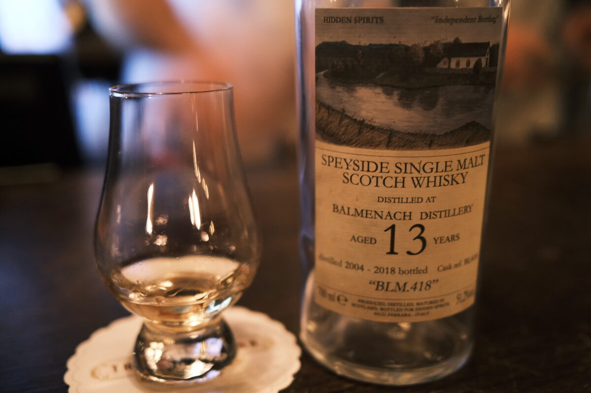

Balmenach 2004 Hidden Spirits 13 years 51.2% (exbourbon)
An honest little exbourbon malt from Hidden Spirits, one of my favourite bottlers. From a rather obscure distillery.
Colour Straw, amber.
Nose Tropical fruits! Pawpaw, rockmelon, mango. Very clear. Cinnamon sticks from afar. Fennel and light sweetness. Passionfruit sorbet. Lemon sherbet. Lemon zest. Fresh woodiness, almost wet, like trees after rain. More passionfruit. After water, strawberry jam on pancakes. Butter.
Palate Creamy. Rice pudding. Those lemons are back, bringing with them toffee and custard bombolone. Sauternes?! Crème patisserie. Sweet pastries and croissants. Minty. After water, some more woodiness and vanilla custard sweetness. Ripe nectarines and peaches. Light minerality and acidity.
Finish Menthol, eucalyptus, and lovely sweet pound cake. Powerfully warming. Toffee. Very long. Mango sorbet and vanilla. A big whack of vanilla, like those bombolone. Whipped cream and vanilla beans. Whiffs of oak rounding out the whole thing. After water, even creamier. Like a sundae! Or a banoffee tart. The creamy banana goes on forever: long.
Comments Masterclass exbourbon. Passionfruit nose is amazing, and the clarity of the bombolone pastry/vanilla/cream notes is spectacular. Big fan of Hidden Spirits. 90/100.

Posted by Dominic on 02 May 2021